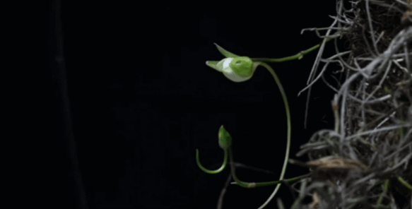
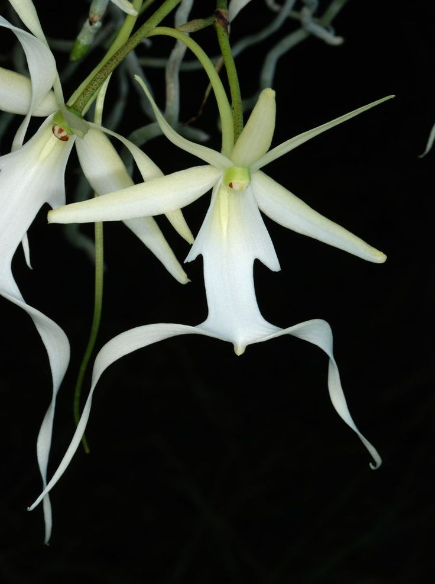
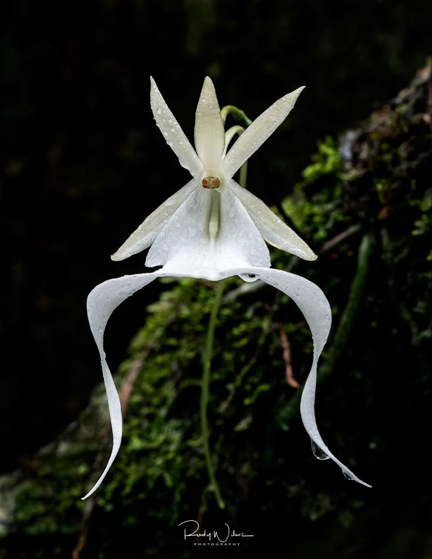
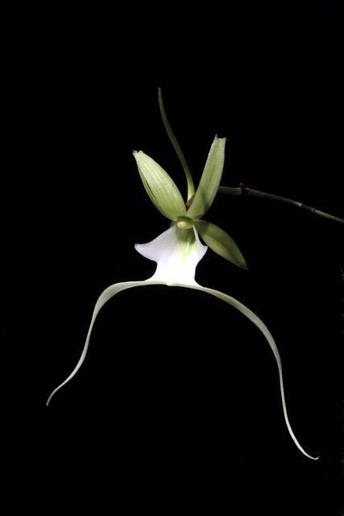

Dendrophylax Lindenii (aka ghost orchid) is a rare and mysterious flower found deep within humid, swampy forests, most famously in the Everglades. With its delicate, white, otherworldly blooms that seem to float in midair, it lives up to its haunting name. This elusive plant is incredibly difficult to spot, as it often grows high up on tree trunks and blends seamlessly with its surroundings. Blooming only for a short period in summer, the ghost orchid is a favorite among botanists and nature lovers, not only for its beauty but also for the challenge of finding it in the wild.


